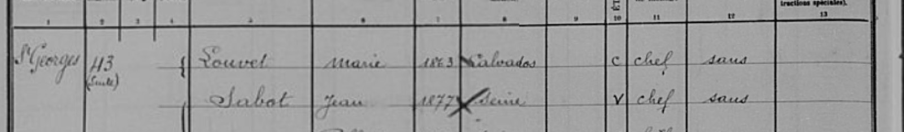

Recensement · 1936
Recensement de population de Paris, 1936, 9e arrondissement, quartier Saint-Georges (rue de La Rochefoucauld – rue de Vintimille) : page « St-Georges 43 (suite) », ménage Dubart, image 182/247
Ce document établit
- Au recensement de population de 1936 (Paris 9e, quartier Saint-Georges), « Dubart Léon », né en 1869 dans la Seine, marié, chef de ménage, est recensé au 43 rue Saint-Georges. vérifié A0939
« Dubart | Léon | 1869 | Seine | M | chef | représentant »
- Au recensement de 1936, Léon DUBART (67 ans d'après l'année de naissance) est déclaré « représentant », sa profession du 43 rue Saint-Georges. vérifié A0940
« Dubart | Léon | 1869 | Seine | M | chef | représentant »
- Au recensement de 1936, « Solange » (épouse du chef de ménage Léon DUBART) est recensée avec lui au 43 rue Saint-Georges (Paris 9e). vérifié A0941
« [même ménage] | Solange | 1879 | Cher | M | épouse | sans »
- Au recensement de 1936, Solange, épouse de Léon DUBART, est déclarée née en 1879 dans le Cher. vérifié A0942
« [même ménage] | Solange | 1879 | Cher | M | épouse | sans »
- Au recensement de 1936, Solange, épouse de Léon DUBART, est déclarée « sans » profession. vérifié A0943
« [même ménage] | Solange | 1879 | Cher | M | épouse | sans »
Transcription
recherches/generation-3/leon-apres-1900/recensement-1936/transcriptions.md
Personnes concernées
Piste PM-015 de Mistral, vérifiée par lecture de l'image par la session principale. Index nominatif (colonnes : nom, prénoms, année et lieu de naissance, nationalité, état matrimonial, situation par rapport au chef, profession). Année « 1869 » lue sans doute ; la partie B (personnes hospitalisées, congrégations) n'est pas diffusée en ligne.
Continuer
Toutes les archives →Document précédentBulletin de l'Institut catholique de Paris, 25 octobre 1927 et 25 novembre 1928 (extraits indexés Geneanet) : dons de « M. et Mme Henri Vilcoq »1927-10-25 ; 1928-11-25Document suivantTable des décès et des successions, 8e bureau (9e arr.), lettre D, juillet 1937 – décembre 1944 : mai 1944, ligne n° 8 (Dubart Léon), image 137/1541944